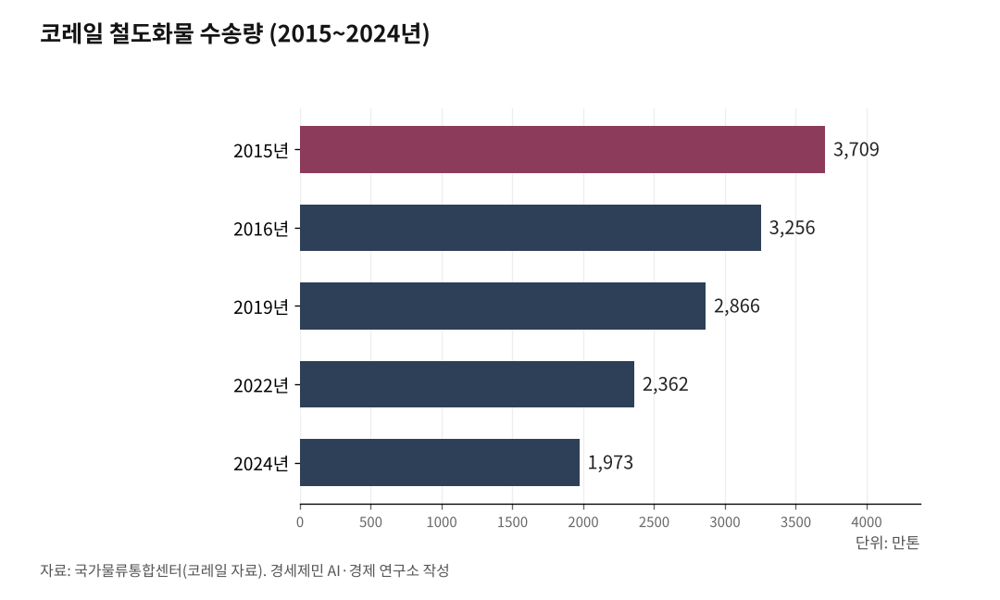

서해안벨트 핵심축 인천발 서해선 KTX③-상
[화물편] 분담률 1.3%, 한국 철도화물은 왜 죽어가는가

철도화물 분담률 1.3%, 코레일 화물 9년간 46.8% 추락
컨테이너·시멘트 두 품목이 71.7%, 구조적 쏠림의 위험
독일 20%, 미국 40%, 한국 3.8% — 정책의 실패인가 조건의 한계인가
독일은 탄소세, 한국은 유가보조금 — 정반대로 달리는 두 나라
한국에서 화물을 실어 나르는 일은 거의 전부 트럭의 몫이다. 철도 화물 분담률은 톤 기준 1.3%다. 코레일 화물은 9년 만에 46.8% 줄었고, 2024년에는 2000만톤 선마저 무너졌다.
독일 20%, 미국 40%와 비교하면 한국의 철도화물은 사실상 소멸 구간에 들어섰다. 그런데 한국의 화물철도가 죽어가는 동안, 서해안에서는 다른 일이 벌어지고 있었다.
장항선은 컨테이너와 철강으로 144만톤을 수송하고, 서해선에서는 화물열차가 굴러가기 시작했다. 무엇이 한국 철도화물을 이 지경으로 만들었는가. 서해안은 왜 다른가. 화물편 상편에서는 진단부터 시작한다.
1. 분담률 1.3%의 민낯 — 2000만톤 선마저 무너졌다
한국에서 화물을 실어 나르는 일은 거의 전부 트럭의 몫이다. 2023년 국내 화물 수송분담률을 보면 공로가 92.7%를 차지한다. 철도는 1.3%다. 해운 5.9%, 항공 0.1%를 합쳐도 도로의 압도적 지위는 꿈쩍도 않는다.
장거리 대량 수송을 반영하는 톤km 기준으로 봐도 도로 87.6%, 철도 12.3%다(2022년). 단거리 소량 다빈도 트럭 물동량이 톤 기준에서 압도적인 반면, 장거리 대량 화물에서 철도의 기여가 톤km에서 드러난다. 그런데 톤km 기준마저 철도는 12.3%에 불과하다.
추세는 더 암울하다. 국가물류통합센터가 코레일 자료를 바탕으로 집계한 연도별 수송량을 보면, 2015년 3709만톤이던 철도 화물은 매년 줄었다. 2016년 3256만톤(전년 대비 12.2% 감소), 2019년 2866만톤(7.3% 감소), 2022년 2362만톤(11.8% 감소).
9년 동안 단 한 해(2021년, 1.9% 반등)를 제외하고 내리 줄었다. 2024년에는 1973만톤을 기록했다. 사상 처음 2000만톤 선이 무너졌다. 9년간 감소율 46.8%다.
톤km 기준은 더 긴 하락의 역사를 보여 준다. 1991년 1만4494백만톤km로 정점을 찍은 뒤 2018년에는 7878백만톤km까지 떨어졌다. 30년 넘게 내리막이다. 45.6% 감소했다.
다만 통계를 읽을 때 유의할 점이 있다. 공로 화물수송량은 2010년까지 영업용 화물차만 집계했으나 2011년부터 비영업용 화물차도 포함했다. 2015년에는 영업용 화물차 통계 작성방식이 보고통계에서 가공통계로 바뀌었다. 이 변경으로 2011년 전후, 2015년 전후 시계열에 단절이 존재한다. 그럼에도 철도 화물의 장기 하락 추세는 부정할 수 없다.

2. 컨테이너와 시멘트가 71.7% — 품목 쏠림의 위험
무엇을 실어 나르는가. 철도산업정보센터가 공개한 2023년 품목별 화물수송실적을 보면 답이 나온다.
컨테이너 784만톤(36.9%), 시멘트 739만톤(34.8%). 이 두 품목이 전체 철도 화물의 71.7%를 차지한다. 철강 200만톤(9.4%), 석탄 116만톤(5.4%), 광석 112만톤(5.2%)이 뒤를 잇는다. 유류는 12만톤(0.6%), 건설은 5만7000톤(0.3%)에 그친다. 사실상 소멸했다.
문제는 이 구조의 미래다. 시멘트·석탄·광석은 산업구조 변화로 장기 감소가 불가피한 품목이다. 시멘트는 건설경기에 직결되고, 석탄은 탈석탄 정책과 함께 줄어든다. 광석도 국내 제련 산업의 축소와 궤를 같이한다. 이 세 품목이 전체의 45.4%를 차지하는데, 모두 구조적 감소 국면에 있다.
유일하게 성장 가능성이 있는 품목은 컨테이너다. 항만과 산업단지를 연결하는 물류의 핵심이다. 항만 인입선, 산단 연결 철도, 내륙 물류기지가 갖춰져야 컨테이너 물동량이 늘어난다. 철도화물이 살아남으려면 컨테이너를 잡아야 한다. 서해선 화물의 의미가 여기서 드러나기 시작한다.
3. 장항선 144만톤이 말해 주는 것 — 서해안에 화물 수요는 있다
품목만 보면 암울하다. 그런데 노선별로 보면 다른 풍경이 나타난다.
2023년 기준 철도 화물수송 1위 노선은 중앙선이다. 약 401만톤. 시멘트가 354만톤으로 대부분을 차지한다. 강원도 영월·제천 일대의 시멘트 산업이 중앙선 화물의 근간이다. 시멘트는 구조적 감소 품목이다. 중앙선 화물의 미래는 밝지 않다.
2위는 남부화물기지선(부산신항 연결)이다. 약 205만톤. 컨테이너 196만톤이 핵심이다. 부산신항은 한국 컨테이너 화물철도의 중심 거점이다.
3위 경부선은 약 147만톤. 컨테이너 136만톤이 주력이다. 의왕 내륙컨테이너기지(ICD)에서 부산으로 내려가는 물동량이다.
주목할 노선은 4위 장항선이다. 약 144만톤인데, 구성이 다르다. 컨테이너 62만톤과 철강 82만톤을 함께 수송한다. 두 성장 가능 품목이 한 노선에 공존한다. 장항선은 충남 서해안을 따라 달린다. 당진 현대제철의 철강과 서해안 산업단지의 컨테이너가 이 노선을 탄다.
여기서 서해선이 등장한다. 서해선은 홍성역에서 장항선과 만난다. 2024년 11월 서해선 홍성~서화성 구간이 개통되면서, 장항선의 144만톤 화물과 서해선이 직결됐다. 동시에 평택선(안중~평택)도 개통돼 경부선과 연결됐다.
서해안에 화물 수요가 없는 게 아니다. 수요는 있는데 철도가 없었다. 이제 철도가 깔리기 시작했다. 이 이야기는 중편에서 본격적으로 다룬다.
4. 누적 적자 20조, 하루 이자 13억 — 코레일의 재정 절벽
코레일은 화물을 실어 나르면서 동시에 돈을 잃고 있다. 정확히 말하면, 화물만의 문제가 아니다. 코레일 전체가 재정 절벽 위에 서 있다.
2024년 코레일 영업수익은 3조737억원이었다. 사상 처음 3조원을 돌파했다. KTX 운송수익만 2조3915억원으로, 간선여객 수입의 81.5%를 차지한다. KTX가 코레일을 먹여 살린다는 말은 과장이 아니다.
그런데 매출이 3조원을 넘었는데도 적자다. 2023년 영업손실은 4415억원이었다. 누적 적자는 20조4654억원이다. 부채비율 237.9%. 연간 이자비용은 4745억원, 하루로 환산하면 13억원이다.
100원을 벌면 82.8원만 원가를 충당할 수 있다. 원가보상률 82.8%가 뜻하는 바다.
간선여객(KTX·일반열차)은 1조원대 흑자를 낸다. 적자를 만드는 건 광역철도(수도권 전철)와 물류(화물)다. 이 두 사업의 적자가 간선여객 흑자를 상쇄하고도 남는 구조다. 화물 부문 단독 매출과 손익은 공식적으로 분리 공시되지 않는다.
화물열차 탈선 사고도 급증하고 있다. 2019년 5건이던 탈선 사고가 2023년에는 20건으로 4배 늘었다. 재정 압박이 노후 시설 교체와 안전 점검 투자를 줄인 결과다.
여기서 두 가지 시각이 충돌한다. 하나는 "화물이 코레일 적자를 가중시키니 축소해야 한다"는 입장이다. 다른 하나는 "화물을 활성화해서 규모의 경제를 만들어야 재정이 개선된다"는 입장이다.
어느 쪽이 맞는가. 이 기사는 후자의 가능성을 서해선이라는 구체적 사례로 살펴본다.
비교 대상이 있다. SR(수서고속철도)은 2023년 매출 6977억원에 영업이익 1384억원을 기록했다. 흑자다. 코레일과 SR의 차이는 무엇인가. SR은 고속철도 여객만 운영한다. 광역철도도, 화물도 없다. 코레일이 떠안은 공익서비스의무(PSO, Public Service Obligation)를 SR은 지지 않는다. 이 구조적 불균형은 1편과 2편에서 다룬 경부선 병목 문제와 맞닿아 있다.
5. 독일 20%, 미국 40%, 한국 3.8% — 격차의 구조적 원인
한국의 철도 화물 분담률 3.8%(톤km 기준)은 국제적으로 어떤 위치인가. 국제교통포럼(ITF)과 국제철도연맹(UIC) 통계를 바탕으로 내륙 화물 수송에서 철도가 차지하는 비중을 보자. 미국이 약 40%다. 러시아는 약 87%에 이른다. 중국 약 16%, 독일 약 20%, 유럽연합(EU) 내륙 평균 17%다.
한국 3.8%는 독일의 5분의 1, 미국의 10분의 1이다.
미국과 러시아의 높은 분담률은 이해하기 쉽다. 대륙 규모의 국토, 수천km 장거리, 산적화물(벌크) 중심이다. 이런 조건에서는 철도가 도로보다 절대 우위를 가진다. 한국과 직접 비교하기에는 조건이 너무 다르다.
독일이 의미 있는 비교 대상이다. 국토 면적은 한국의 3.6배이나 인구밀도는 비슷하다. 제조업 비중이 높고, 수출 의존도가 크다는 점도 유사하다. 그런데 독일은 약 20%를 유지한다. 1995년부터 30년 가까이 이 수준을 지켰다. 자연스럽게 유지된 게 아니다. 정책적 노력의 결과다.
일본은 어떤가. 한국과 가장 유사한 조건이다. 좁은 국토, 긴 해안선, 단거리 고빈도 물류 구조. 일본의 철도 화물 분담률은 약 5%다. 한국 3.8%보다 약간 높다. 일본은 연안 해운이 화물의 상당 부분을 분담한다는 점에서 한국과 다르다. 그러나 유사한 지리 조건에서도 일본이 한국보다 높다는 사실은, 한국의 3.8%가 조건의 한계가 아니라 정책의 실패임을 시사한다.
EU는 목표를 세웠다. 2030년까지 철도 화물 분담률을 30%로 올리겠다는 것이다. 현재 내륙 기준 17%에서 13%포인트를 더 올리겠다는 계획이다.
EU 철도화물 수송실적은 2024년 약 374억톤km로, 2018년 410억톤km 정점 이후 코로나와 우크라이나 전쟁 영향으로 감소 추세에 있다. 그럼에도 분담률 목표는 후퇴하지 않았다. 탄소중립이라는 상위 목표가 철도 화물 확대를 밀어붙이기 때문이다.
6. 독일은 탄소세, 한국은 유가보조금 — 정반대로 달리는 정책
같은 문제를 마주하고 독일과 한국은 정반대 방향으로 달렸다.
독일은 2023년 12월부터 대형 차량(3.5톤 초과)에 이산화탄소(CO₂) 1톤당 200유로의 탄소세를 부과했다. 독일 연방도로물류협회에 따르면, 이 조치로 화물차 통행료가 70~80% 올랐다. 화물차 km당 총비용은 7.9% 증가했다.
의도된 결과다. 도로 화물의 비용을 올려서 철도로 전환하게 유도하는 것이다. 독일은 이 정책에 앞서 수십 년간 철도 인프라에 투자하고, 도로와 철도 간 연계 물류(복합운송)를 지원해 왔다. 탄소세는 그 위에 얹은 마지막 지렛대다.
한국은 반대다. 화물자동차 유가보조금을 2015년부터 연평균 1조7400억원 지급해 왔다. 화물 트럭의 운영비를 정부가 보전해 주는 제도다. 화물차 기사의 생계를 보호한다는 취지이나, 결과적으로 도로 화물의 가격 경쟁력을 유지시키고 철도 전환의 동기를 제거한다.
수송수단별 탄소 배출량을 보면 모순이 더 선명해진다. 백만톤km 수송 시 이산화탄소 환산 배출계수는 도로가 266, 철도가 11이다. 도로가 철도의 24배를 배출한다. 일본 국토교통성 기준으로 1톤·1km 수송 시 이산화탄소 배출량은 트럭 167그램, 철도 21그램, 선박 38그램이다. 어떤 기준으로 봐도 철도는 도로의 수십 분의 1에 불과하다.
한국 정부도 탄소중립 로드맵(2021)에서 수송부문 온실가스를 2030년까지 37.8%, 2050년까지 97.1% 감축하겠다고 밝혔다. 탄소중립 기본법과 탄소중립 시나리오에서도 "철도의 수송 분담률 향상과 철도화물 경쟁력 강화"를 명시했다.
전환교통보조금 제도도 2010년 시범 도입, 2011년 본격 시행했다. 도로에서 철도로 화물을 전환하면 보조금을 주는 제도다.
그런데 동시에 화물차 유가보조금을 매년 1조7400억원씩 준다. 한 손으로는 철도 전환을 권하면서, 다른 손으로는 트럭에 기름값을 보전해 주는 셈이다.
독일이 탄소세로 도로를 비싸게 만들어 철도를 살리는 동안, 한국은 보조금으로 도로를 싸게 유지해 철도를 죽이고 있다. 탄소중립 로드맵의 목표를 철도 전환 없이 달성하기란 산술적으로 불가능하다.
중편에서는 이 구조 속에서 서해선이 어떻게 다른 길을 만들고 있는지 살펴본다.
[사진] 경부선 화물열차 — 서울 도심 구간에서 KTX와 선로를 공유하며 밀려나는 화물열차
[사진] 서해안고속도로 화물차량 — 철도가 없어 트럭에 의존하는 서해안 물류
참고문헌
"수송량과 수송분담률", 국토교통부(e-나라지표), 2025.11.26. 갱신, https://www.index.go.kr/unity/potal/main/EachDtlPageDetail.do?idx_cd=1245
"철도화물수송 추이", 국토교통부(e-나라지표), 2025.11.27. 갱신, https://www.index.go.kr/unity/potal/main/EachDtlPageDetail.do?idx_cd=1250
"철도 화물수송실적통계", 국가물류통합센터(코레일 자료), https://www.nlic.go.kr/nlic/frghtRail0010.action
"노선별 화물수송실적(연도)", 철도산업정보센터, 2023년 조회, http://www.kric.go.kr/jsp/industry/rss/raillinecargoitemList.jsp?q_fdate=2023
"탄소중립시대 철도물류 현황과 전망", 한국물류경제신문, 2024.11.5., https://www.klnews.co.kr/news/articleView.html?idxno=314443
"화물운송시장의 빛과 그늘… 도로 의존도 88%", CVinfo, 2025.7.11., https://www.cvinfo.com/news/articleView.html?idxno=29413
"주요국 화물수송 수단별 분담률, 2020", 국제교통포럼(ITF, OECD), The Geography of Transport Systems 인용, https://transportgeography.org/contents/chapter5/transportation-modes-modal-competition-modal-shift/modal-share-selected-countries/
"2024 유럽 복합운송 보고서", 국제철도연맹(UIC)·유럽복합운송연맹(UIRR), 2024.11.15., https://uic.org/IMG/pdf/uic_uirr_report_2024-2.pdf
"화물수송 수단별 분담률 통계", 유럽연합통계청(Eurostat), 2024., https://ec.europa.eu/eurostat/statistics-explained/index.php?title=Freight_transport_statistics_-_modal_split
"내륙수송 철도 분담률과 인프라 투자", 국제철도연맹(UIC), 2023.11.21., https://uic.org/com/IMG/pdf/the_modal_share_of_rail_in_inland_transport_and_infrastructure_investment.pdf
"[제5차 국가철도망⑥] 기후위기 시대 철도에서 사라진 화물", 인천투데이, 2025.7.21., https://www.incheontoday.com/news/articleView.html?idxno=305604
"코레일 2024년 영업수익 사상 최초 3조원 돌파", 철도경제신문, 2025.2.11.
"코레일 개혁③", 인천투데이, 2025.2.25.
※ 이 기사는 AI 프로그램 클로드를 활용해 작성했습니다.